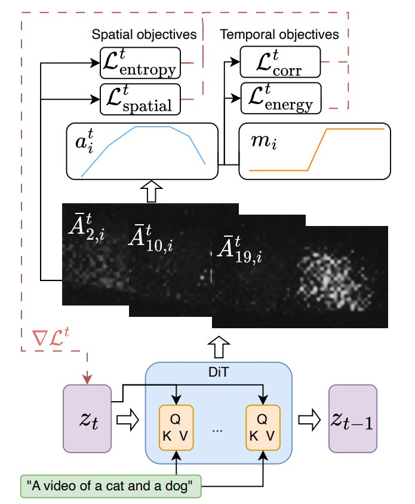
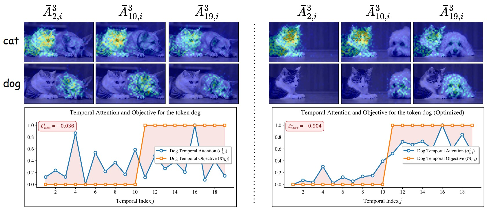

TempoControl uses inference-time optimization by steering the latent variables during the diffusion process. At each denoising step, we apply a few gradient descent iterations until a satisfactory level of temporal alignment is achieved; importantly, without updating the model parameters.

Illustration of TempoControl. During a single denoising step $t$, we extract spatial attention maps $\bar{A}^t_{j,i}$ (for word $i$ at temporal index $j$), aggregate to a temporal attention signal $a_{i}^t$, and align it with the target mask vector $m_{i}$ via temporal and spatial losses. Gradients $\nabla \mathcal{L}$ are used to update the latent code $z_t$.
TempoControl's temporal losses rely on cross-attention maps that link words to their visual appearance in the video. Thus, steering the attention placement and strength can influence the temporal and spatial appearance of objects.

Video generated for the prompt ``A cat and a dog.'' Before (left) and after optimization (right). Top: Spatial attention maps for the tokens cat> and dog at denoising step $t{=}3$, shown for frames $j{=}2,10,19$. Attention is overlaid on generated frames. Bottom: temporal attention $a_{i,j}^t$ (blue) vs. target mask $m_{i,j}$ (orange), with Pearson correlation loss shown.
Our loss consists of the following components, for temporal (i) $\mathcal{L}_{\text{corr}}^t$ (ii) $\mathcal{L}_{\text{energy}}^t$, for spatial (iii) $\mathcal{L}_{\text{entropy}}^t$ (iv) $\mathcal{L}_{\text{spatial}}^t$:
(i) Temporal correlation term $\mathcal{L}_{\text{corr}}^t$:
Encourages the temporal shape of attention to match that of an external control signal, operating on the normalized attention vector to align the presence of a concept with the desired timing.
$$\begin{equation}
\mathcal{L}_{\text{corr}}^t = -\frac{\text{Cov}(m_i, \tilde{a}_i^t)}{\sigma_{m_i} \sigma_{\tilde{a}_i^t}}
\end{equation}$$
(ii) Attention energy term $\mathcal{L}_{\text{energy}}^t$:
Directly promotes stronger attention in frames where the temporal signal is high, and suppresses it elsewhere, mitigating cases where correlation scores are high but attention values are too low to render the object visible.
$$\begin{equation}
\mathcal{L}_{\oplus}^t = \frac{1}{T'} \sum_{j=1}^{T'} \mathbb{1}_{\{m_{i,j} > \tau\}} \cdot a_{i,j}^t
\end{equation}$$
$$\begin{equation}
\mathcal{L}_{\ominus}^t = \frac{1}{T'} \sum_{j=1}^{T'} \mathbb{1}_{\{m_{i,j} \leq \tau\}} \cdot a_{i,j}^t
\end{equation}$$
$$\begin{equation}
\mathcal{L}_{\text{energy}}^t = \mathcal{L}_{\ominus}^t - \mathcal{L}_{\oplus}^t
\end{equation}$$
(iii) Entropy regularization $\mathcal{L}_{\text{entropy}}^t$:
Maintains spatial focus, ensuring that when attention is activated, it remains coherent and not diffusely spread across the frame.
$$\begin{equation}
\mathcal{L}_{\text{entropy}}^t = \frac{1}{T'} \sum_{j=1}^{T'} \mathbb{1}[m_{i,j} > \tau] \cdot \mathcal{H}(\bar{A}^{t}_{j,i})
\end{equation}$$
(iv) Spatial consistency penalty $\mathcal{L}_{\text{spatial}}^t$:
Maintains spatial consistency by penalizing deviations between the initial and optimized spatial attention maps for the target word.
$$\begin{equation}
\mathcal{L}_{\text{spatial}}^t = \left\| \sum_{j=1}^{T'} \left( \hat{A}^{t}_{j,i} - \bar{A}^{t}_{j,i} \right) \right\|_2^2
\end{equation}$$
Total Loss:
$$\begin{equation}
\mathcal{L}^t = \lambda_1 \mathcal{L}_{\text{corr}}^t + \lambda_2 \mathcal{L}_{\text{energy}}^t + \lambda_3 \mathcal{L}_{\text{entropy}}^t + \lambda_4 \mathcal{L}_{\text{spatial}}^t
\end{equation}$$
where $\lambda_1, \lambda_2, \lambda_3, \lambda_4$ are hyperparameters that balance the contributions of each loss term.
BibTeX
If you find this project useful for your research, please cite the following:
@misc{TempoControl2025,
Author = {Shira Schiber and Ofir Lindenbaum and Idan Schwartz},
Title = {TempoControl: Temporal Attention Guidance for Text-to-Video Models},
Year = {2025},
}